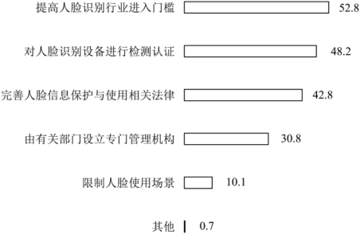

真题 · 非连续文本阅读
科技伦理与人工智能治理
四则材料结合技术滥用、公众调查、伦理监管和全球治理，讨论人工智能发展的规范问题。
导读
四则材料结合技术滥用、公众调查、伦理监管和全球治理，讨论人工智能发展的规范问题。
文本出处：材料一取材于杨明《守好科技伦理底线》；材料二取材于《智慧城市中的“刷脸”应用：公众的认知与评价》；材料三取材于李传军《人工智能发展中的伦理问题探究》；材料四取材于《人工智能的伦理挑战与科学应对》。
原文与随文研读
原文按结构分节；随文内容可定位至对应段落。
材料一·科技伦理：从技术滥用风险提出全过程治理。
新兴技术一般具有高度专业化的特点，非专业人士往往难以对技术应用后果作出准确判断。因此，在应用初始阶段容易出现监管真空和法治缺失。如果科技工作者缺乏应有的科技伦理操守，就容易被资本力量、商业行为所裹挟。比如，一些网上商家滥用个人信息数据，进行差异定价的“大数据杀熟”，使市场伦理、商业伦理受到冲击。再如，滥用信息传播中的“算法”推荐，基于用户的行为数据判定其喜好，“投其所好”推送特定种类信息，制造“信息茧房”效应。又如，基于人工智能的“AI换脸”“深度伪造”等技术应用，可能威胁公民人身安全和金融安全。诸如此类的新兴技术滥用，突破了伦理边界、道德底线，甚至游走在违法犯罪的边缘。加强科技伦理治理，需要将价值权衡与伦理考量纳入科技活动全过程，进一步明晰科技创新活动的伦理边界，引导科技工作者增强伦理意识、提升自律能力、坚守道德底线，警惕和防范技术滥用可能引发的伦理风险。
批注 1
全过程的伦理考量
将价值权衡与伦理考量纳入科技活动全过程材料先列举个人信息、算法推荐和深度伪造等风险，再提出全过程治理；这一建议着眼于从科技活动各阶段防范风险。
材料二·公众调查：呈现受访者对人脸识别规范措施的看法。
公众对规范智慧城市中人脸识别技术应用的看法（%）：提高人脸识别行业进入门槛52.8；对人脸识别设备进行检测认证48.2；完善人脸信息保护与使用相关法律42.8；由有关部门设立专门管理机构30.8；限制人脸使用场景10.1；其他0.7。

批注 1
调查数据的含义
提高人脸识别行业进入门槛52.8这一数值表示调查中选择该项措施的受访者比例，适合与图表内其他措施比较；推断时应保留调查对象范围，不宜直接扩大为全体公众的意见。
材料三·伦理监管：说明监管方案与道德学习的复杂性。
从本质上来说，人工智能伦理问题虽然是因技术而产生的，但是它却无法仅仅依靠技术来解决，人工智能的技术研发和应用必须受到法律和道德规范的约束。可行的方案是建立人工智能伦理审查委员会以对人工智能伦理相关问题进行全面监管。伦理源于情感，比如孟子所说的“恻隐之心”就是基于情感的伦理意识，“羞恶之心”“辞让之心”“是非之心”，虽然有了较多的理性反思，但或多或少地与情感有一定的联系。因此，人工智能的道德学习是一个比较复杂的过程，它更多的是一个情感过程而非技术过程，因而很难程序化，这就使得人类对于人工智能伦理的监管更为困难。人工智能伦理的关键是将人工智能这种技术物提升到人所处的道德地位，从而使人工智能成为受到伦理规范约束的道德能动者。
材料四·全球治理：阐释非对抗、非失控原则和科技向善。
人工智能原则也应包含非对抗与非失控的理念。非对抗意味着不应将人工智能视作人类社会的对抗性存在，人工智能已经成为人类社会的构成性要素，我们必须持更为开放的态度去面对人工智能。非失控意味着不应放弃对人工智能的伦理规范，应以智能的方式去规范加速发展的人工智能。如果以上述理念为前提，也就是说，在支持人工智能发展的情况下，科技向善的文化理念在推动全球人工智能健康发展中就变得极为重要。此处的“善”在国家治理层面即指向“善治”，而当人工智能的发展从国家范围扩展到全球范围，“善治”就在构建人类命运共同体的意义上拥有了更贴近现实的内涵。
第1题 · 内容理解
下列关于科技伦理相关问题的理解和分析，正确的一项是（3分）
A．本质上说，人工智能的道德学习不是技术过程，而是情感过程，所以难以监管。
B．由于处于科技活动的初始阶段，所以新兴技术研发时可以暂时不考虑科技伦理。
C．人工智能作为社会的构成性要素，已经推动科技向善落实在国家“善治”上了。
D．对规范人脸识别技术应用看法的调查结果，反映了公众对政府监管、引领的期盼。
参考答案1展开 / 收起
参考作答
D。
文本分析
A项：程度和结论均被强化查看证据 ↗
材料三说“更多的是”情感过程，难以程序化，使监管“更为困难”；选项取消程度限定，并将比较意义上的困难改为笼统的难以监管。
B项：伦理考量应贯穿全过程查看证据 ↗
材料一指出应用初期可能存在监管真空，随后要求伦理考量进入科技活动全过程；前者是风险，不构成暂缓伦理要求的理由。
C项：治理价值不等于已经实现查看证据 ↗
材料四称人工智能已成为社会构成要素，并解释“善”在治理层面的指向；没有据此断言科技向善已经落实。
D项：图表体现制度性监管期待查看证据 ↗
调查选项涉及提高行业门槛、设备检测、完善法律与设立管理机构，反映公众对制度规范和监管引领的期待。
第2题 · 内容理解
下列对四则材料的相关分析，不正确的一项是（3分）
A．材料一从现实生活新兴技术被滥用的现象中，提出了“科技伦理治理”的问题。
B．材料二从完善法律、健全监管渠道等角度来设计调查选项，以征求公众的意见。
C．材料三给出监管人工智能伦理问题的方案，并从伦理起源的角度进行因果论证。
D．材料四立足人工智能原则，指出构建人类命运共同体取决于科技向善理念的普及。
参考答案2展开 / 收起
参考作答
D。
文本分析
A项：以现实问题引出治理查看证据 ↗
材料一列举数据差异定价、算法推荐滥用和深度伪造等现象，进而提出加强科技伦理治理。
B项：调查涉及法律与监管查看证据 ↗
图表列有完善法律、设立管理机构等选项，以展示公众对不同规范方式的看法。
C项：方案与监管难点的原因查看证据 ↗
材料三提出建立伦理审查委员会，并从伦理与情感的关系说明道德学习难以程序化、监管更加困难。
D项：把重要性误写成决定关系查看证据 ↗
材料四说在支持人工智能发展的前提下科技向善对全球人工智能健康发展极为重要，并在构建人类命运共同体的意义上理解“善治”；没有说共同体建设取决于该理念的普及。
第3题 · 内容理解
下列对材料的理解和推断，不正确的一项是（3分）
A．当新兴技术产生的伦理问题已被人们认识到的时候，着手解决它就变得十分困难了，所以要尽早加强“科技向善”宣传。
B．完善人脸信息相关法律规定，加强对人脸识别行业的全方位监管，有助于提高公众对智慧城市建设的满意程度。
C．进一步厘清科技创新的伦理边界，引导科技工作者守住伦理底线，人工智能就能成为受伦理约束的道德能动者。
D．始终心系人民福祉，才能有效避免技术滥用可能引发的伦理风险，推动人工智能健康发展，保障科技创新行稳致远。
参考答案3展开 / 收起
参考作答
C。
文本分析
A项：尽早关注伦理风险查看证据 ↗
材料一指出初期容易出现监管真空，材料四强调科技向善；据此倡导尽早重视伦理风险，符合防范方向。
B项：回应公众对规范的期待查看证据 ↗
图表显示受访者选择完善法律、提高准入和检测认证等措施；加强规范有助于回应公众期待，但具体满意度效果仍需实际检验。
C项：必要措施不能保证充分结果查看证据 ↗
材料一提出科技工作者应明晰边界、守住底线；材料三强调人工智能道德学习的复杂性。选项用“就能”把有关措施说成足以实现道德能动者的保证，推论过度。
D项：以公共福祉约束风险查看证据 ↗
材料要求防范侵犯人身、金融安全等风险，并以科技向善规范人工智能发展；将技术治理指向公共福祉，与其价值取向相容。
参考文献
2023年高考天津卷。试题与参考答案